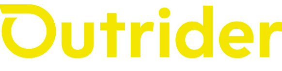
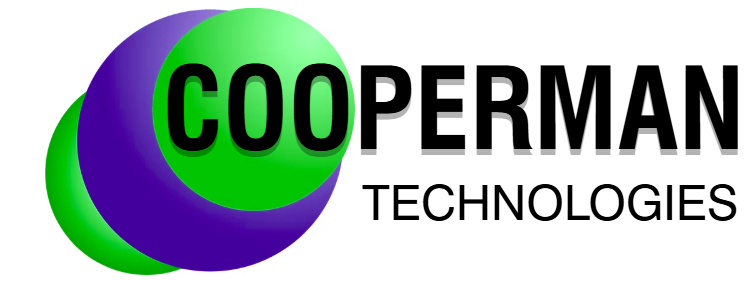
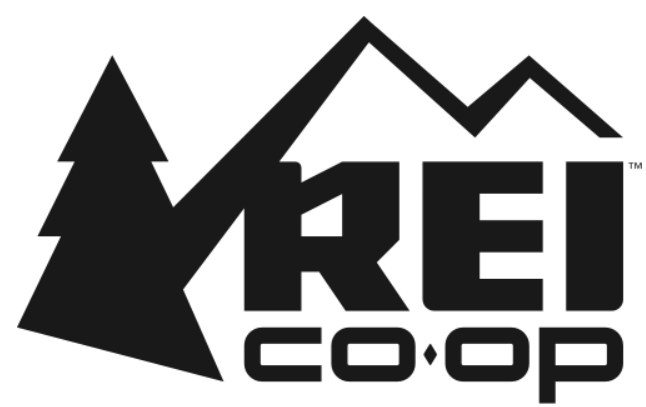

Work Experience
Outrider
Mechanical Engineer

Spearheaded the design of 20+ prototype and production assemblies for fleet of autonomous vehicles, including ruggedized, IP-rated enclosures and thermal management sub-systems. Orchestrated cross-functional design reviews with electrical, manufacturing and supply chain teams to ensure cost-effective fabrication and seamless system integration. Authored comprehensive engineering technical drawings applying exper-level GD&T (ASME-Y14.5, 2009) to ensure precision and manufacturing consistency. Managed the full life-cycle of Engineering Orders (EO's) and revisions, ensuring technical documentation accuracy from concept to release.
Cooperman Technologies
Mechanical Design Engineer

Developed detailed 3D CAD models of high pressure CO2 machines used for textile processing and botanical extraction. Performed engineering calculations on pressure vessels, piping to ensure material strength and structural integrity. Created physical prototypes and conducted feasibility studies to validate designs. Analyzed data from pilot facilities, troubleshooting issues and iterated on designs to improve efficiency and performance.
CML Security
Project Engineer
Managed RFI's and submittals, updated project schedules ensuring safety (OSHA) compliance. Travelled to sites to liaise with Superintendents and owners. Studies job specifications to determine appropriate detention center hardware. Acted as liason between general contractor, architect and project team.
Puzzah
CAD Technician/CNC Operator
Helped conceptualize themed puzzles, storylines and interactive experiences using CAD (Autodesk Inventor/Solidworks) software. Built functional prototypes of interactive props using a variety of manufacturing processes. Integrated electronic microcontrollers to create automated triggers, magnetic locks, sensors and lighting effects. Rigorously tested new puzzles to strike a balance between challenge and frustration, adjusting difficulty based on tester feedback.
Tersus Solutions
Mechanical Engineer, Intern
Sole intern focused on developing 3D models and engineering drawings for new and existing high pressure CO2 process equipment. Developed comprehensive bills of materials (BOM's) and technical documentation for manufacturing. Fabricated test prototypes to validate design functionality, performance and efficiency. Analyzed test data, troubleshoot issues and iterated designs for optimization. Supported production teams with process improvements and technical guidance during assembly.
REI
Bicycle & Ski Technician/Service Writer

Acted as the liaison between the customer and shop, managing appointments, and ensuring timely, quality work. Assembled and repaired bicycles, snow sports equipment and installed automobile roof/hitch/trunk transport racks. Delivered exceptional service to members/non-members while ensuring equipment was fitted and safe. Won internal bicycle shop of the year for 2 consecutive years
Red Point Metal Works
Metal Shop Apprentice
Gained hands-on experience by cutting, shaping, grinding, welding and assembling metal parts. Operated lathes, mills, shears and press brakes for fabrication. Interpreted blue prints, layouts and CAD drawings.